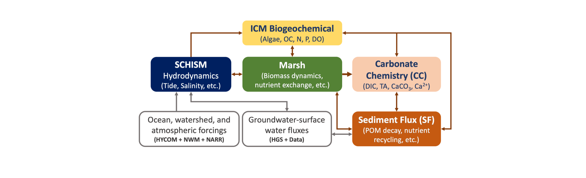
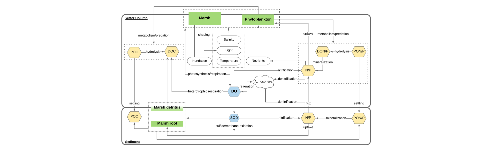

About
As a computational oceanographer and coastal ecosystem modeler, my research is driven by a central question: How do land-sea interactions within the dynamic transition zone, from the coastal shelf to upland zone, shape and respond to climate change and other environmental stressors? I investigate tightly coupled physical and biogeochemical processes, with a focus on tidal dynamics, saltwater intrusion, carbon cycling, tidal wetlands, and benthic-pelagic coupling. I integrate process-based numerical modeling, machine learning, and data-driven analysis to investigate complex coastal systems across spatial and temporal scales. My work includes developing biogeochemical and ecological sub-models within the open-source 3D SCHISM platform, applying machine learning to enhance diagnostics and forecasting, and leveraging large observational datasets to uncover system patterns, test hypotheses, and inform both conceptual understanding and model development.
Research Theme & Vision
Publications
Full list of publications at Google Scholar.
Recognizing Salt Wave Events in Coastal Systems
[preprint]
A Seamless Two-Decade Cross-Scale Simulation from the North American Atlantic Coast to Tidal Wetlands Using a 3D Unstructured-grid Model
[preprint]
Sea-level Rise Impacts on Tidal Marshes and Estuarine Biogeochemical Processes
[paper]
The Roles of Tidal Marshes in the Estuarine Biogeochemical Processes
[paper]

Bifurcate Responses of Tidal Range to Sea-level Rise in Estuaries with Marsh Evolution
[paper]
[supplementary]

Impacts of Sea Level Rise on Hypoxia and Phytoplankton Production in Chesapeake Bay
[paper]

A Numerical Study of Hypoxia in Chesapeake Bay Using an Unstructured Grid Model: Validation and Sensitivity to Bathymetry Representation
[paper]

Impact of Submerged Aquatic Vegetation on Water Quality in Cache Slough Complex, Sacramento-San Joaquin Delta
[paper]
Datasets & Models
SCHISM Ecosystem modeling system

Communications between ICM Biogeochemical Model, Sediment Flux Model (SF), and Tidal Marsh Model:

Carbonate Chemistry ModelSubmerged Aquatic Vegetation Model
Benthic Algae Model
Benthic Feeder Model
Bioturbation Model
Sediment Transport Model
Wind Wave Model
Watershed and Airshed coupling
CV & Bio
View my full CV pdf here.
Education
- 2022, Ph.D., Marine Science, William & Mary | VIMS
- 2018, M.S., Marine Science, William & Mary | VIMS
- 2015, B.S., Oceanography, Nanjing University
Professional Experience
- NSF Ocean Sciences Postdoctoral Fellow at School of the Environment
- Mentors: Peter Raymond (Yale), Holly Michael (U. Delaware), Sergio Fagherazzi (Boston U.)
- Aug. 2024 - present
- ORISE Fellow at Chesapeake Bay Program Office
- Aug. 2021 – Jul. 2024
- International Visiting Fellow at Institute for Chemistry and Biology of the Marine Environment
- Host: Jörg-Olaf Wolff
- Fall, 2017
- Graduate Research Assistant at Department of Physical Oceanography
- Advisors: Joseph Zhang, Jian Shen
- Aug. 2015 – Jul. 2021
Yale University
U.S. Environmental Protection Agency
University of Oldenburg, Germany
William & Mary | Virginia Institute of Marine Science